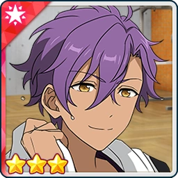

Running My Way
Idol Story



Tetora: Man, that's rough, Otogari-senpai. Who would've thought it’d start raining all of a sudden?
Good thing ES was nearby. If we’d been caught out on the way home, we would’ve been in trouble. We’d end up catching a cold if we’d kept running in the rain!
Adonis: Indeed. Fortunately, the training room has treadmills. It's a shame though, I quite enjoy the feeling of the wind rushing past me when I run…
They have plenty of strength-training equipment there, too. We should still be able to make good use of our time.
Tetora: Ossu! Speaking of strength training, running up and down stairs is great for building up your legs, right?
I heard that when Anzu-anego feels she hasn’t been getting enough exercise, she uses the emergency stairs to get around.
Adonis: That’s a good habit to have. The stairs are an excellent place to train as they are available for anyone to use.
Someone's coming down the stairs now... Could it be Anzu?
Tetora: Hmm, I don't think so. Those footsteps sound a little too heavy to be anego’s...?
Mitsuru: Ah! Ado-chan-senpai! Tetsu-chan!
Adonis: Oh, it was you, Tenma. Where are you off to in such a hurry? Do you have work?
Mitsuru: Nope! I've got free time! I've been done with work for ages!
I was playing in the Hanging Garden, but then it started raining, so I couldn't run around anymore...
So now I’m running up and down the stairs instead! I’d get told off if I went dashing through the corridors!
I'm so considerate! Aren't I great? Ahem! ☆
Adonis: Indeed. Well done, Tenma.
Just be careful not to slip. It would be terrible if you got injured.
Mitsuru: It's fine, it's fine! I won't get hurt!
Check me out! Look how fast I can get over to you two! Dash, dash–!
W-waaa?
Tetora: Mitsuru-kun?!
Adonis: ...That was close. Are you all right?
Mitsuru: Y-yeah... Thanks for catching me, Ado-chan-senpai.
It's so embarrassing to fall right after saying that. I'll be more careful~
Tetora: Please do. You seriously scared me then, man.
Adonis: ...You're as light as Nito-senpai, Tenma. Are you eating properly?
Mitsuru: Hup! Of course I am! I eat bread every day!
Adonis: Bread is good. I like anpan, too. But eating nothing but bread will leave your diet unbalanced.
Meat is best for your health. Eat plenty of it so you grow big and strong.
Mitsuru: I do eat other things, you know. Hold on a sec... lemme just...
Found it! Here, you can have this hamburger bread! It's my way of saying thanks for catching me!
Now I get to eat meat and bread together, so it’s “Nii-chan, one stone”~♪
Adonis: ...Hmm. So eating meat and bread together is known as “Nii-chan, one stone”. That’s good to know.
Tetora: No, no! That’s definitely not right! The proper expression is ‘kill two birds with one stone’! [1]
Mitsuru-kun, the stairs are slippery from the rain, so you'd better not run down them today, yeah?
If you want to get some exercise, the training room is the best place! How about working up a sweat with us?
Mitsuru: Yay! ♪ That sounds like fun! I wanna work up a sweat, too! I'll go change into my training clothes at the office~!
Adonis: Then we'll meet you in the training room. Be careful not to fall on your way there.
Mitsuru: Okay! See you later~!
Five minutes later
Adonis: ...Hm. It seems someone got here before us.
Tetora: It's Sazanami-senpai. He’s still on that gym grind, even when it’s raining. That's impressive~♪
Adonis: Are the two of you close?
Tetora: Senpai and I understand each other through our muscles! You could say the gym is what brought us together!
...Ah, looks like he's noticed us. Good work, Sazanami-senpai!
Jun: Oh, hey there Nagumo-kun... and...
Adonis: I'm Otogari Adonis from UNDEAD.
Jun: I'm Sazanami Jun from Eden. We run into each other here from time to time, but this is the first time we've properly introduced ourselves, isn't it~?
Adonis: That's right. I didn't want to disturb your training, so I hadn't spoken to you until now.
Jun: Same here. I figured you might prefer to train on your own, and I didn't want to get in your way.
But if you don't mind, I'd like to take this opportunity to get to know you better. You've got some pretty impressive muscles, after all...♪
Adonis: I'd be glad to. I'm happy to have found someone I can train alongside and push myself with.
Tetora: ...Sazanami-senpai. You've been checking your watch for a while now. Got somewhere to be?
Adonis: I was wondering about that too. If you’re in a hurry, I apologise for keeping you.
Jun: Ah, my bad. I don't have anywhere in particular to be, so don't worry about it.
I'd left my music playing, and it was bothering me... There, all paused now.
Tetora: Music...? You can listen to music on that watch?
Jun: It’s a smartwatch. It has all sorts of features. Like, you can track the steps you’ve taken, calories burned, even your heart rate~.
You can connect it to your phone and have all that data saved in an app, so it's really easy to keep track of your health.
Or so Ibara told me, anyway~. Charging it is a bit of a pain, and at first I thought the whole thing sounded kinda questionable.
But once I actually started using it, I found it pretty handy.
Adonis: I had no idea such a thing existed. I thought you had to measure your heart rate by placing your fingers against your wrist. What a convenient world we live in.
Jun: If you're interested, why not get one yourself? I know a few shops that sell them. I could take you there sometime.
The health-tracking app also lets you share your workout records with people you've exchanged IDs with. I think being able to see how much the other person's training would be good motivation for both of us.
Tetora: That sounds awesome~! Now I want one, too!
Adonis: I'd like that. Just let me know which day works for you, and I'll arrange my schedule accordingly.
Jun: Sounds good. I'll check mine later.
Mitsuru: I'm here~! Sorry to keep you waiting! The star of the show has arrived! Yahoo~! ☆
Tetora: Whoa. He jumped straight on the treadmill as soon as he got here.
Jun: Dude, isn't that speed setting a little too high? He's gonna wear himself out in no time!
Adonis: It's fine. This is normal for Tenma.
Mitsuru: Ahaha! This is amazing, amazing! No matter how fast I run, nobody can stop me! And nobody's gonna tell me off either!
This is fun~! Dash, dash, dash~☆
Jun: ...He's not even a little bit tired. He's actually going even faster. I can't let this guy show me up!
Tetora: Come on, let's quit standing around chatting and get to our own training!
Adonis: Agreed. Let's begin.
Mitsuru: ♪~♪~♪
Tetora: Whoooaaa~!
Jun: ...
Adonis: (...It seems that, just as our appearances and personalities differ, so do our approaches to training.)
(And yet, there's a strange sense of unity between us. Surely this must be...)
(...what you'd call a bond brought about by weight training ♪.)